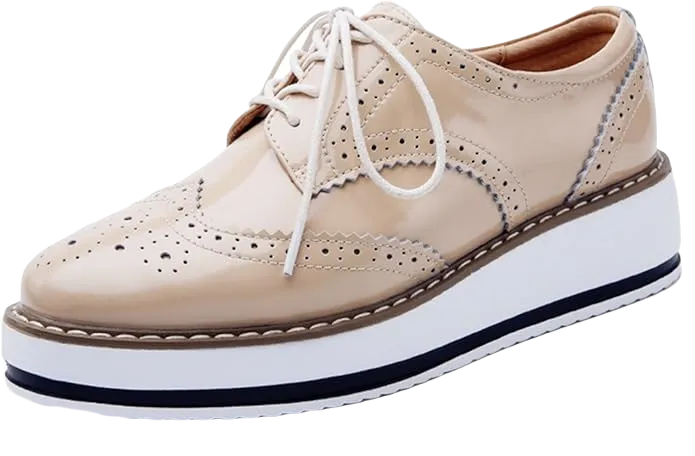
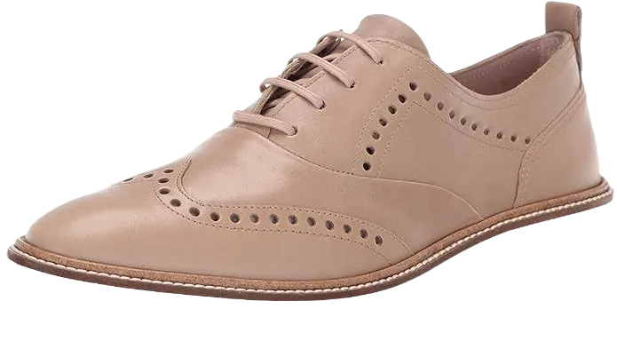
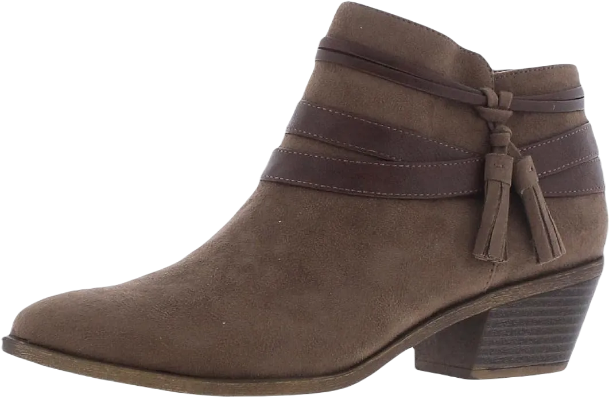
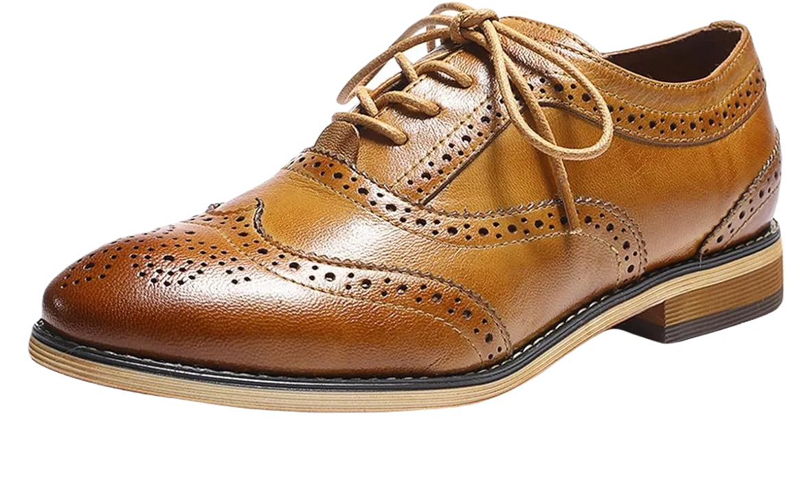
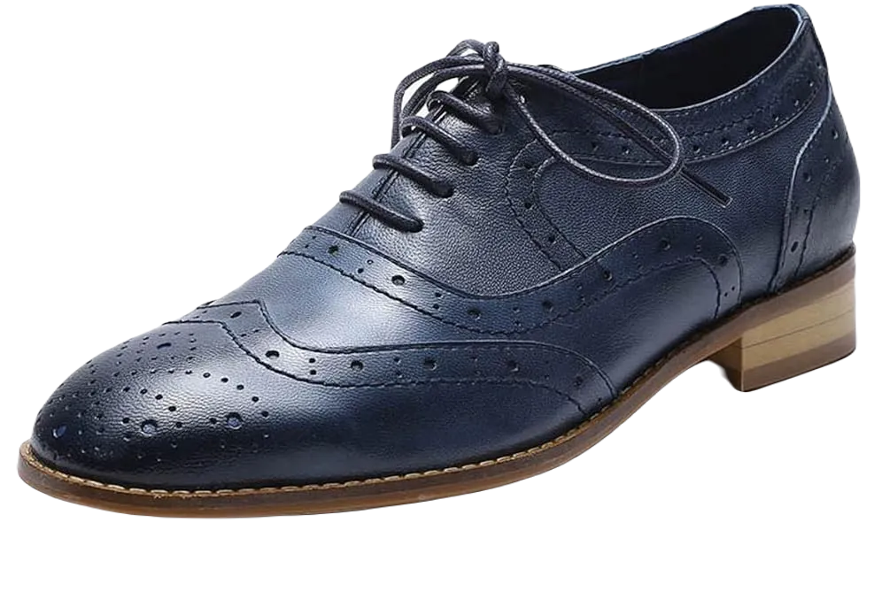
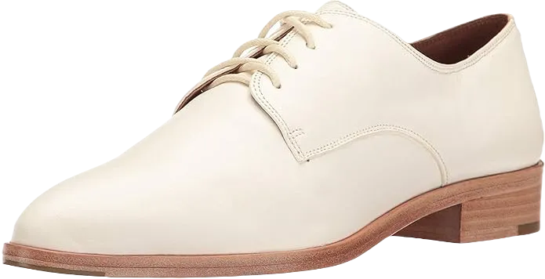
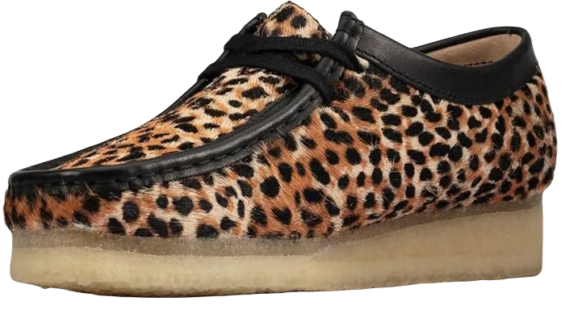

10 Best Oxford Shoes For Women 2024 Update
Shoes are essential for daily wear, providing comfort and style. These Oxford shoes, crafted from high-quality leather, offer an elegant design that suits formal occasions perfectly. They are designed to make you feel light and comfortable throughout the day.
Additionally, these shoes are valued for their comfort and affordability in the market, making them a great investment for your feet. Their quality ensures that you get a good return on your purchase while maintaining a stylish appearance.
-
#1
Dadawen women’s Plat
When searching for farming boots, it’s essential to consider several important factors that we will These shoes are designed to protect women's toes effectively, capable of withstanding various hazards that could harm your feet. They provide excellent coverage and comfort, allowing you to feel secure and stylish while wearing them. Their lightweight nature contributes to a comfort zone that enhances your overall experience.
The leather construction ensures durability, while the rubber sole adds a layer of softness, making them great for alleviating any foot pain you may have. These shoes are also shock-resistant and effectively repel water, ensuring that your feet stay protected in adverse conditions.
Understanding that women often prioritize fashion alongside comfort, these shoes have been designed to cater to both needs. With a stylish appearance and the ability to shield your toes from potential harm, they are a perfect blend of functionality and aesthetics. -
#2
Women’s 1461 w Oxford array

We understand how essential the right shoes are for your comfort and style, which is why we've designed the perfect footwear to meet your needs. These shoes are ideal for walking and are built to provide the support and comfort you deserve. The high-quality leather used in their construction enhances their durability and appeal.
The outsole and insole are equipped with features that ensure maximum comfort and softness for your feet. With a breathable design, these shoes promote airflow, keeping your feet dry and protected from extreme heat while effectively repelling moisture.
These shoes not only offer ease of movement but also feature a sole tailored to the shape of your feet, ensuring a perfect fit. Their thoughtful design combines functionality and versatility, making them an excellent choice for everyday wear. -
#3
Ecco women’s incise Tai
We are excited to introduce these shoes, designed to provide exceptional comfort and a soft feel with every wear. They are a fantastic addition to your daily footwear collection, offering both durability and a stylish look that makes you feel light and fashionable.
These shoes are crafted to ensure maximum comfort, providing the ideal footwear solution you've been searching for. Their flexible design allows for a soft touch, making them suitable for all-day wear.
Understanding the importance of quality, we've created these shoes to deliver the perfect balance of style and functionality. They can seamlessly transition from formal to casual settings, all while prioritizing your comfort. -
#4
Life stride women’s Paloma ankle
These shoes are ideal for both casual and formal wear, boasting a design that can withstand water and other elements that might disturb your feet. They provide durability and comfort, making them perfect for everyday use while ensuring you feel at ease throughout the day.
We prioritize your needs and understand what features are essential for your footwear. The soles of these shoes are designed to absorb impact, offering excellent waterproof capabilities that keep your feet dry and comfortable.
Our products are crafted to provide warmth and style, ensuring you look polished while enjoying the best support for your feet. With their lightweight construction, you can wear them confidently without worrying about discomfort. -
#5
Flying leather women’s Oxford Shoes
These Oxford shoes provide exceptional comfort and flexibility, capable of supporting all the weight placed on them. It’s essential that shoes feel comfortable without causing any stress or pain while wearing them. For this reason, we are introducing these specific shoes, designed with features that prioritize your comfort.
Crafted with lightweight materials, these shoes offer an excellent balance of style and functionality. They are easy to slip on and off, making them convenient for busy moments. Additionally, they provide outstanding stability, ensuring each step feels secure and confident.
People are drawn to these shoes not only for their stylish design but also for their thoughtful construction, which alleviates discomfort in the toe area. With their softness and comfort level, these shoes truly stand out as a preferred choice for many. -
#6
Mona flying women’s leather
These Oxford shoes are perfect for elevating your style while ensuring optimal comfort. Designed with soft leather layers, they provide a high-quality feel that enhances your overall experience. Their thoughtful features keep your toes in great condition, making them an excellent choice for daily wear.
Comfort is key, and these shoes deliver with their durable rubber soles that offer both stability and support. You’ll appreciate how they accommodate your feet, providing the right balance of cushioning and lightweight comfort. Choosing these shoes means investing in a quality product that truly meets your needs.
Not only are these shoes functional, but they also enhance your style, allowing you to look your best effortlessly. With their elegant design, they add a touch of grace to any outfit, making them a must-have for your wardrobe. -
#7
Frye women’s Erica Oxford taupe designer shoes
These shoes are designed to provide exceptional comfort, making them the perfect choice for women on the go. We're excited to introduce this footwear at an attractive price, ensuring you get great value while enjoying all the benefits. With these shoes, you'll feel comfortable and stylish, ideal for travel and everyday wear.
Featuring both rubber inner and outer soles, these shoes offer a remarkable level of softness and support for your toes. Their lightweight design allows for prolonged wear without discomfort, making them an excellent travel companion. Available in a wide range of colors, they cater to your style while ensuring flexibility and comfort for your feet.
Understanding that feet are sensitive, we’ve selected high-quality materials to create a product that meets your needs for daily wear. These shoes provide the perfect blend of durability and comfort, making them an essential addition to your wardrobe. -
#8
Women’s derby snow leopard print calf
Oxford shoes are designed with an emphasis on style and comfort, ensuring they meet the needs of your feet. Available in a wide range of colors, these shoes provide excellent toe protection and are perfect for everyday wear. Their flexibility ensures that you won't encounter any discomfort while wearing them.
We proudly present these shoes made from high-quality imported leather, offering exceptional softness and comfort. With few options on the market that balance style and practicality, these shoes stand out as a fashionable choice. Their premium materials, including a supportive inner and outer sole, ensure maximum softness and support for your feet.
Our design prioritizes your comfort, with a lightweight structure that feels gentle on your feet. These shoes are crafted to provide the best possible experience, combining style and functionality to help you look and feel great every day. -
#9
Women’s Fallon flat shoes

Women deserve shoes that are perfect for everyday wear, combining style and comfort seamlessly. We're excited to introduce these exceptional shoes designed specifically for you, providing the comfort you seek in your daily life.
These shoes excel in relieving foot stress while offering the protection you need. They not only enhance your fashionable look but also boast impressive durability and flexibility, making a positive impact on your feet.
We prioritize your needs and understand how essential it is to find the right shoes. With a variety of sizes available, these shoes offer the best choices to suit your preferences and ensure your comfort. -
#10
Caterpillar women’s tally Oxford Shoes
.webp)
We're excited to discuss shoes that provide exceptional comfort and outstanding qualities tailored for you. These shoes come in a variety of sizes and colors, featuring a great range of designs to suit your style. They are crafted to offer comfort while effectively managing breathability, ensuring your feet stay comfortable throughout the day.
Choosing these shoes means enjoying the benefits of a rubber sole, both in the insole and outsole, designed to give you a delightful wearing experience. We understand the importance of comfort in your daily routine, and these shoes excel in providing that.
With excellent breathability, these shoes effectively manage moisture, allowing your feet to stay dry even during sweaty activities. You can wear them all day without any discomfort, making them a reliable choice for any occasion.